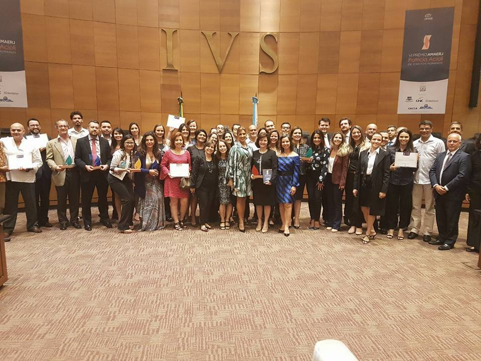
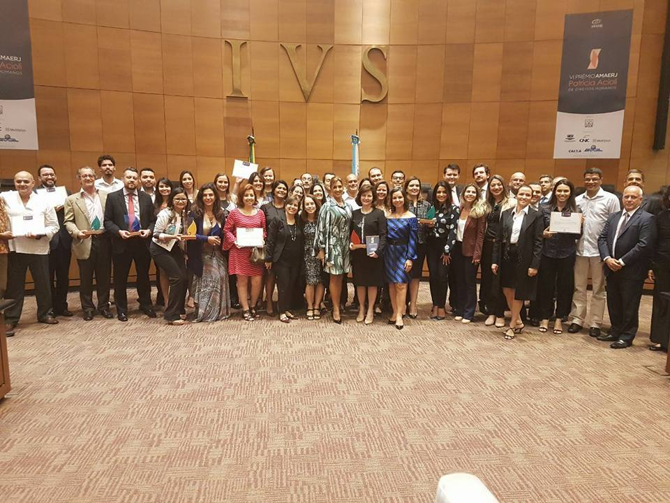
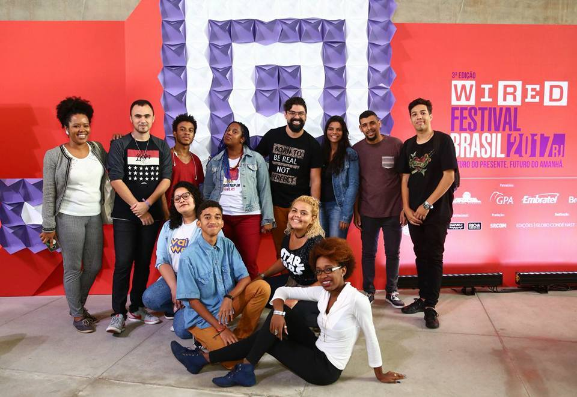
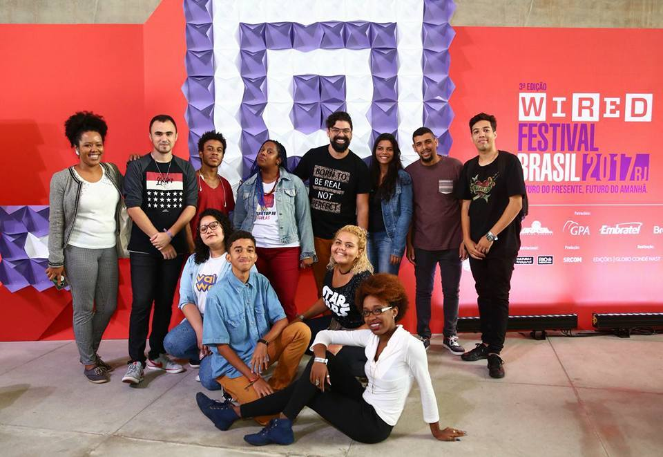
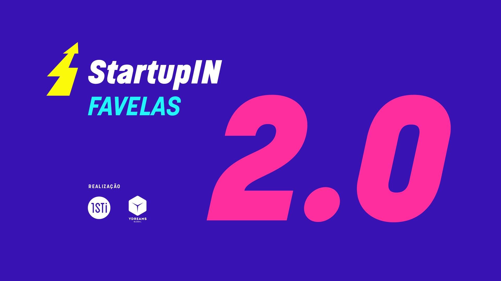
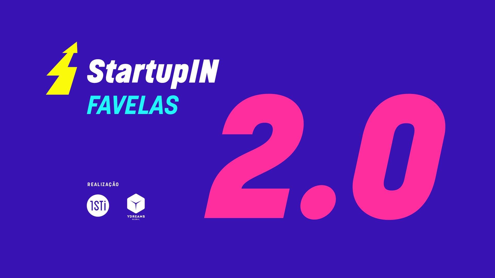
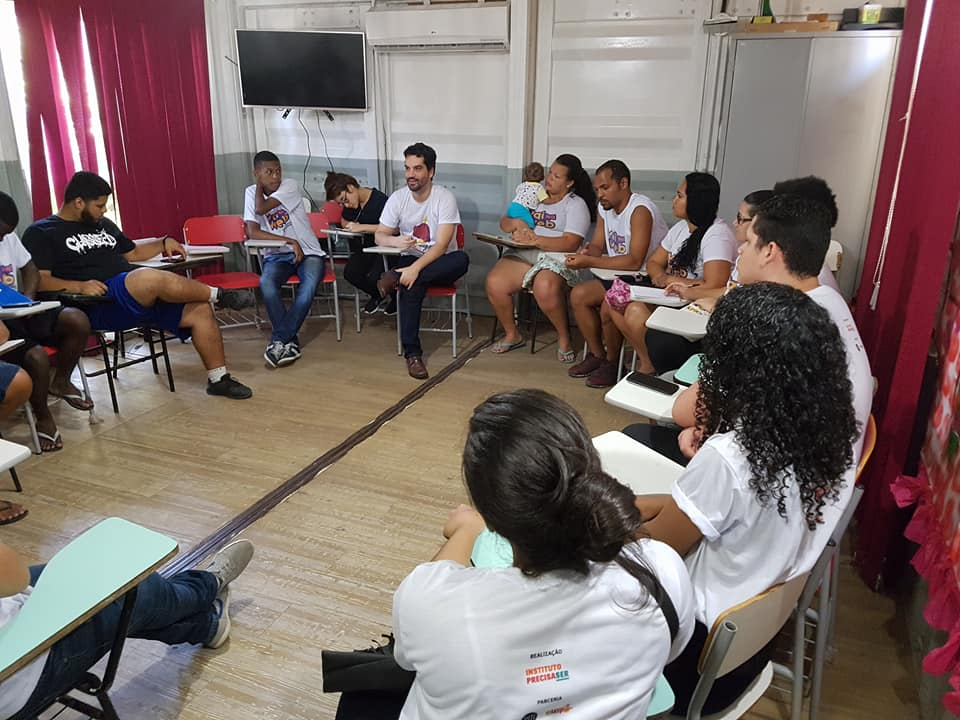
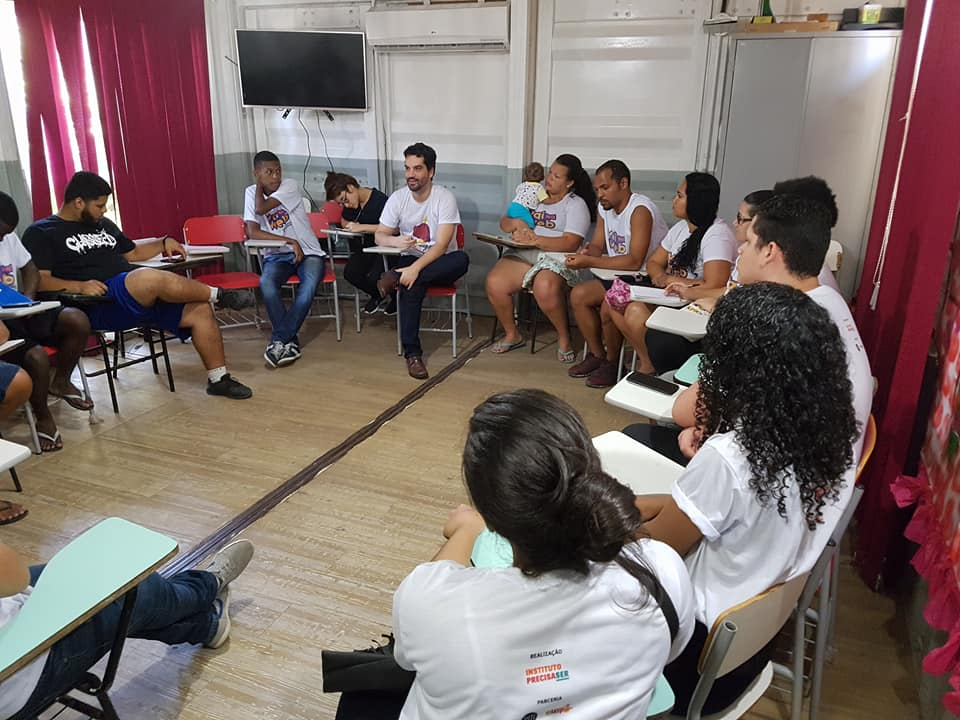
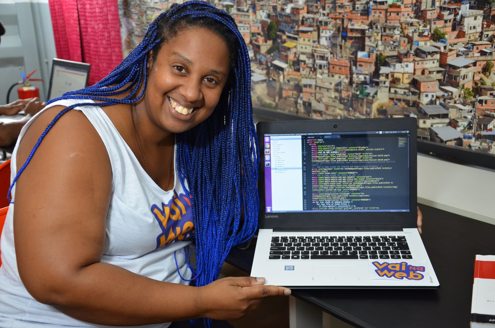
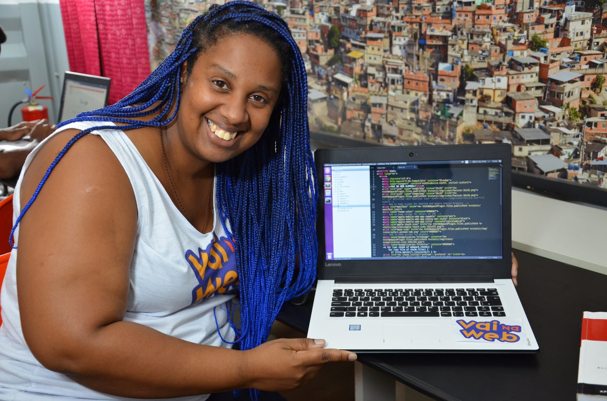

 

 

 


Instituto de tecnologias sociais e digitais
A tecnologia é a ferramenta que move o mundo. Existimos para colocá-la a favor das reais necessidades da sociedade. Trabalhamos em rede com ativistas, empreendedores, organizações sociais e privadas para potencializar a inteligência coletiva e desenvolver ações de valor compartilhado que geram benefícios econômicos e sociais capazes de regenerar territórios.
NOSSOS PROJETOS
É um programa de educação digital avançada que potencializa a democratização da tecnologia. Aqui estudantes de 16 a 30 anos moradores de favela e apaixonados por tecnologia são capacitados gratuitamente nas mais sofisticadas linguagens de programação que o mercado deseja. É uma jornada de aprendizado e crescimento profissional que cria oportunidades por todos os lados.
Saiba mais em www.vainaweb.com.br

 

Estúdio Vai Na Web - É um centro de formação continuada onde os estudantes vão aperfeiçoar seus conhecimentos técnicos em programação e suas habilidades profissionais para atuação no mercado de trabalho.
Saiba mais em www.vainaweb.com.br


O empreendedorismo é o maior mecanismo de geração de riqueza da nossa sociedade. O StartupIN Favelas é um movimento que busca fomentar o ecossistema empreendedor dentro das favelas. Em julho de 2017, reunimos em dois dias de imersão 80 empreendedores de favela para aprender sobre as maiores técnicas globais de empreendedorismo e evoluir seus negócios. Após esse evento, abrimos dois concursos de ideias digitais onde o vencedor ganhou o design e construção da primeira versão do seu app.
Saiba mais em http://startupin.1sti.com.br/


PROJETOS PARCEIROS

Pontinho de Luz
Uma rede de solidariedade e amor ao próximo através da prática da gentileza. Seja um pontinho de luz!

Reciclação
Um grupo de coleta seletiva de resíduos, redução de riscos ambientais em barragens e encostas e promoção do consumo consciente.

Há Esperança
Trabalho de alfabetização e reforço escolar com crianças, grupos de convívio e apoio entre mulheres e acompanhamento de famílias em situação de vulnerabilidade social.

Alimentando Vidas
Uma rede de solidariedade e amor ao próximo através da prática da gentileza. Seja um pontinho de luz!

Turma da sopa
Uma associação que utiliza o alimento como uma forma de reintegrar o indivíduo em situação de rua ou em vulnerabilidade social à sociedade.

Centro Social Agir
Já tem um projeto e quer participar da nossa rede? Fique de olho aqui e em nosso Facebook, em breve teremos mais novidades.

Através da Música
Uma turma cheia de melodia, ritmo e harmonia decida a mudar realidades de pessoas e comunidades através da música.

Educap
Já tem um projeto e quer participar da nossa rede? Fique de olho aqui e em nosso Facebook, em breve teremos mais novidades.

OSC Legal
Plataforma que apoia juridicamente ONGs e outras iniciativas sociais a compreender de maneira simplificada os conceitos e procedimentos para regulamentação das organizações e outras questões de direito.